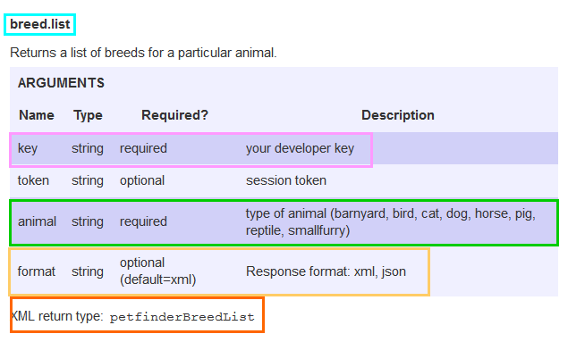
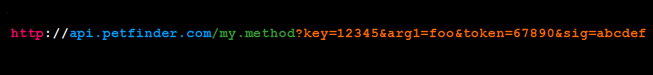
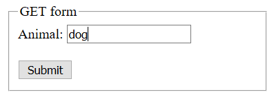
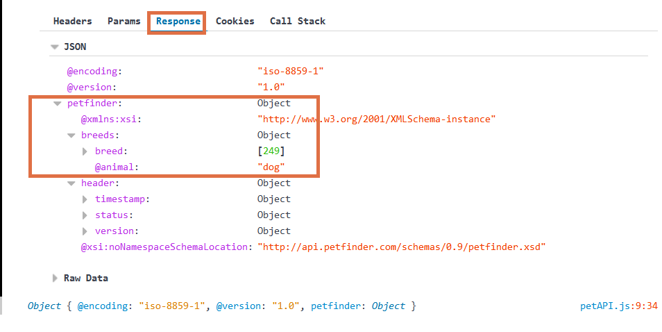
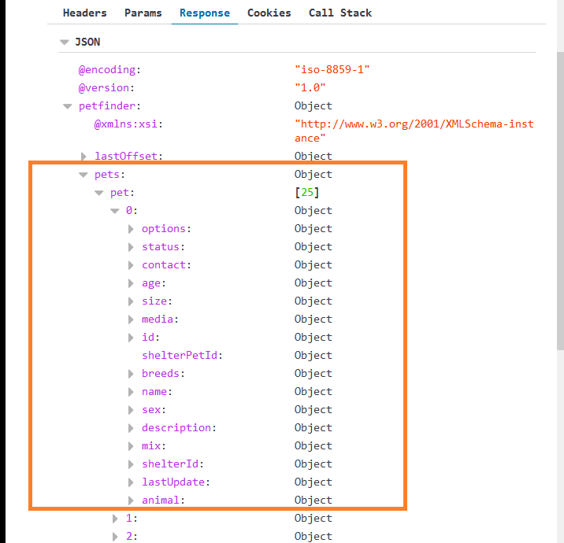
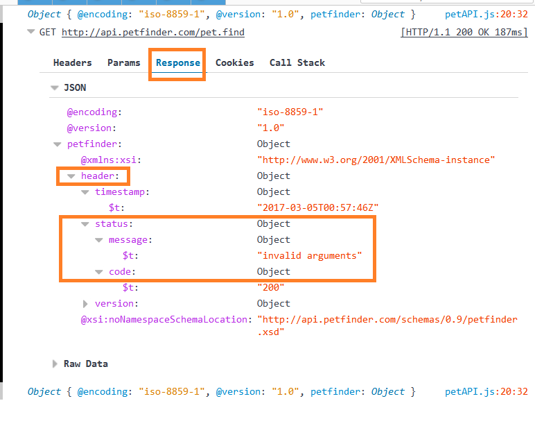
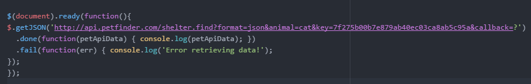
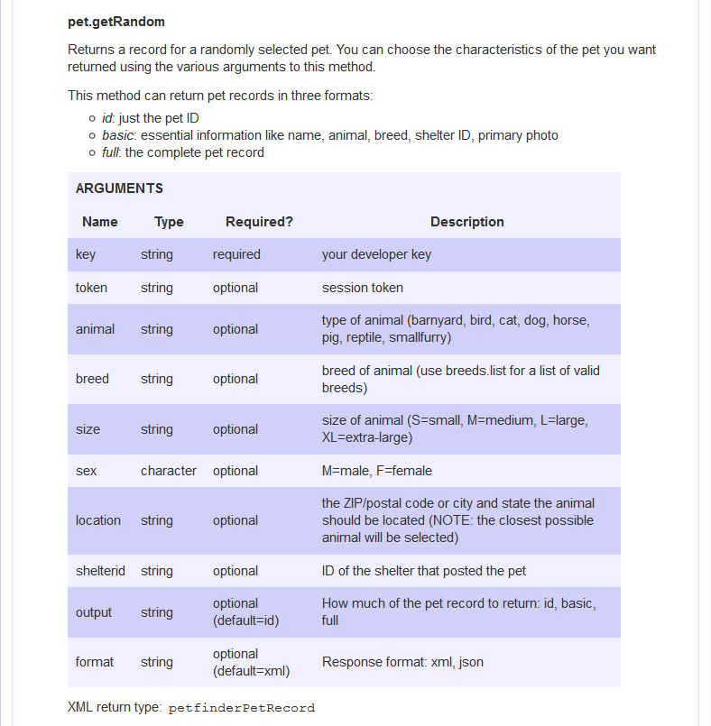

Utilizing the API (Basic)
Building the URL
The API documentation page lays out all the information needed in your GET call. They are listed by the paths you need for various types of information. Under each path there is a table of the arguments that are needed for a successful GET call. We will walk through one of the simpler ones to get us started.
Note that some are marked required while others are optional and can be omitted. This allows us to ignore the token parameter for now. We will learn about tokens on the next page.
The parameters:
Remember the example URL:
-
The first thing you will see in the set of parameters is the path. This should be the first thing you append to your URL.
Everything after this should be sent in the query, and can be listed in any order as long as the syntax is followed. I like to keep things a logical order, making everything more legible and understandable later on.
-
The Petfinder API can communicate with us via XML or JSON. XML is their default, but we are using JSON so we need to indicate this in our call. This is pretty easy.
Remember, this is the first parameter of the query so we need to put a
?in front of it. All parameters after the first need to be separated by?. -
Next is the data the server needs to in the query in order to give the correct response. This is the information you will get from the user. For now, we will say the user wanted to know all the breeds of dogs.
 -
Once all the data is appended it is time to add your key, which gains you access to the server. I like putting it at the end because it is a set of random characters, and when put in the middle it can make the query difficult to read. Now that everything is appended to the URL we can now send it to the server.
-
If everything goes as expected the server will send a response of data that you can use in your app. If you open your browser's developer tools (usually
F12) you should see something like this in your console. I have put boxes around the information that we will want to start working with.This is another example of the information in the web console of your browser when it is successfully returned.
And here is an example of a failed call. Notice the error code is held in the status. The meaning of the numerical error codes are listed on the documentation page. Understanding the error that has been thrown can be very helpful for debugging.
Once you are successfully interacting with the API you can start developing your app around it.
Communicating with the API
To get the response above, the URL was sent to the server via this jQuery GET method:
This GET method successfully communicated with the server resulting in a response, but there are a couple problems. First, this is a static call. It involves no meaningful interaction with the user. The other problem is nothing is done with the information aside from logging it in the console. We are now ready to build a more robust app around the API fixing these problems.
Dynamically Interacting with the User
It is time to put all your new shiny knowledge into action. We need to make a form so the user can tell us what they need, and a way to get this information into the URL query to send to the server. To do this, we will use a jQuery method to turn all the data into a nice query-ready string (I told you jQuery is here to make your life easier), then put that in a JavaScript variable. We will then append that variable, along with any pieces of data we want to include outside of user content, and the key.
Data Not Included on the User Form
The Petfinder API gives you a lot of room to customize the response you are going to get from them. This helps the user of your app find precisely what they are looking for.
However, you probably don't want them to be in charge of all of these options. In the parameter list below there are options like and output, format (as previously discussed) and the key.
If the user could have control over certain arguments they could potentially break, or at the very least, slow down your app. Also, because the Petfinder API uses the $.getJSON method over
the regular GET call, you need to add callaback=? to the end of your URL. It cannot go anywhere else. I will append it directly on the key because I always put the key as close to the
end as possible for legibility.
There are a couple of ways to take care of this: You can make a JavaScript variable or two to act as containers and append them to the query, or add a static string of all the information that appends itself to the end. If you have a lot of parameters, the variable containers may be the cleanest way to go. But, if it is only one or two parameters it may be easier to just add a static string. This decision can be based on personal preference.
The Parameters:
Let’s practice on a path with more variables. Not all are required so a form is set up with a few of the arguments ready to go, leaving room for you to add a few to test your skills. If everything is functioning correctly, it should print to screen: query data in a string (for your benefit), and the specified data returned by the API.
Note: Without seeing the information in the console it will be hard to print new parameters you add to the form. If you did it right, it will still function, if you didn't it will break. Feel free to copy the code to new files on your computer and test it out in your browser. If the fiddle isn't loading properly you can find it here.